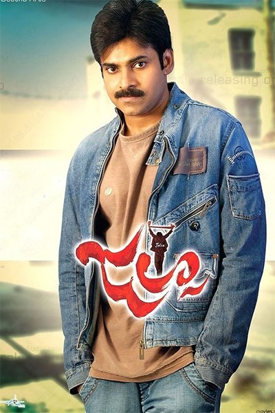

I'm a freshman graduate student of Nothwest Missouri state University. I consider myself as mind of determination with lots of hopes on future and sheer focus. i will try to enjoy every moment of my life irrespective of the results.
Pawan Kalyan: Pavan Kalyan is extremely energetic as Sanjay Sahu. He did fresh dialogue modulation to create good humor. Everybody had a doubt about Pawan Kalyan performing to the Trivikram's punches and I must say that Pawan Kalyan excelled in getting the Trivikram dialogues right. He did not mind uttering satire on his 'pulla kallu'. He also did fights really well. Pawan Kalyan is looking dashing in Che Guevera get-up during his naxalite days. The film is pretty neat in terms of the comedy department. But he could not fix the narrative into any one particular genre. The screenplay should have been better. The director who made hero reveal about his downtrodden past and social commitment through the dialogues before interval could not match it with the characterization of hero in the second half. Trivikram did very good in technical aspects in terms of sets, camera angle etc.
